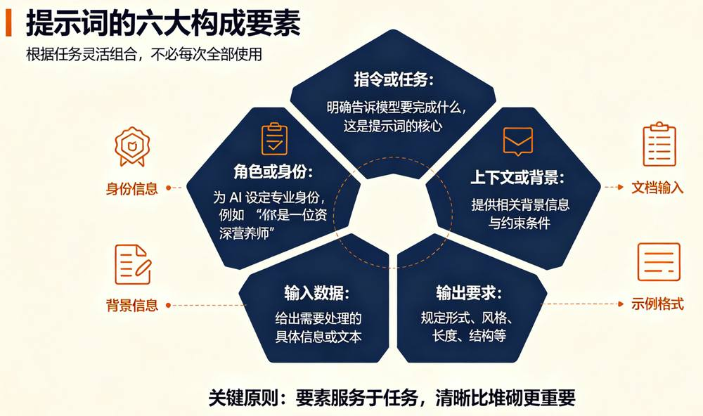
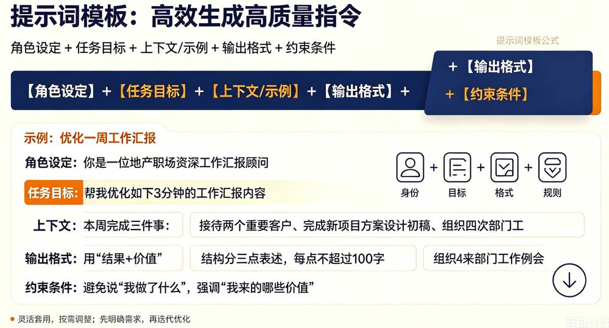

第 1 页 · 2 提示词工程
2 提示词工程

模块5：浅尝生成式人工智能


第 2 页 · 为什么同样的大模型工具，不同的提问方式，效果天差地别？
为什么同样的大模型工具，不同的提问方式，效果天差地别？
第 3 页 · 一、提示词
一、提示词
第 4 页 · 二、提示词工程
二、提示词工程
第 5 页 · 三、提示词的构成要素
三、提示词的构成要素

第 6 页 · 四、提示词设计六大实用技巧
四、提示词设计六大实用技巧
第 7 页 · 五、提示词设计模版
五、提示词设计模版

第 8 页 · 设计感谢信提示词
设计感谢信提示词

请尝试为撰写一封感谢信设计一个完整的提示词，包含所有六大构成要素。
| 要素 | 内容 |
| 角色设定 | |
| 任务目标 | |
| 上下文 | |
| 输出格式 | |
| 约束条件 | |
| 示例 |
第 9 页 · 学生分享及教师点评
学生分享及教师点评

| 分享要点 | 分值 | 计分 | 教师点评 |
| 1、开发社区养老智能体时，你是如何综合考量平台需求与各平台的适配度的？ | 20 | 主动使用AI工具 | |
| 2、小组研讨中，你们围绕养老智能体落地开展了哪些深度交流？ | 20 | 集思广益、团结协助 | |
| 3、结合养老服务场景，简述商业平台与开源平台的核心差异与适用逻辑 | 20 | 积极思考、善于思考总结 | |
| 4、智能体开发平台会给我们今后专业学习、职业发展带来哪些影响？简述 1-3 点？ | 20 | 创新思维、与众不同 | |
| 5、其它（包含表达逻辑、仪态、发言主动性、表述流畅度、自信度等） | 20 | 表达流畅自信，善用技术、贴合民生需求 |
第 10 页 · 子任务3：语音提示处理
子任务3：语音提示处理
主动拥抱AIGC
让AIGC赋能你我